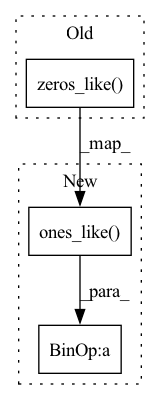

Pattern ID :20119

Before Change
other_y = torch.cat(other_y)
poison_x = self.mark.add_mark(other_x)
poison_y = torch.zeros_like(other_y)
poison_y.fill_(self.target_class)
clean_x, clean_y = self.dataset.get_dataset(mode="train")
all_x = torch.cat((clean_x, poison_x))
After Change
other_y = torch.cat(other_y)
poison_x = self.mark.add_mark(other_x)
poison_y = self.target_class * torch.ones_like(other_y)
trainset = self.dataset.get_dataset(mode="train")
clean_x, clean_y = next(iter(self.dataset.get_dataloader(dataset=trainset, batch_size=len(trainset),
shuffle=True, num_workers=0, pin_memory=False)))
In pattern: SUPERPATTERN
Frequency: 3
Non-data size: 3
Instances
Fragment ID: 65812831
Project Name: ain-soph/trojanzoo
Commit Name: ba7a05c0e1d8e0b546a7c0e7c168b1e57ccc0eba
Time: 2020-09-23
Author: ain-soph@live.com
File Name: trojanzoo/attack/backdoor/bypass_embed.py
M Class Name: Bypass_Embed
N Class Name: Bypass_Embed
M Method Name: sample_data(1)
N Method Name: sample_data(1)
M Parent Class: BadNet
N Parent Class: BadNet
M File Name: trojanzoo/attack/backdoor/bypass_embed.py
N File Name: trojanzoo/attack/backdoor/bypass_embed.py
M Start Line: 38
M End Line: 51
N Start Line: 44
N End Line: 59
'>
Before Change
sorted_row_idxs = torch.repeat_interleave( torch.arange(dist_mat.shape[0]).long(), repeats=k ).to(device)
close_bond_idxs = torch.stack([ sorted_row_idxs, sorted_col_idxs ], dim=0)
// set closest k to index 0
bond_buckets = torch.zeros_like(dist_mat)
// merge all bonds
if close_bond_idxs.shape[0] > 0:
whole_bond_idxs = torch.cat([native_bond_idxs, close_bond_idxs], dim=-1)
After Change
sorted_row_idxs = torch.repeat_interleave( torch.arange(dist_mat.shape[0]).long(), repeats=k ).to(device)
close_bond_idxs = torch.stack([ sorted_row_idxs, sorted_col_idxs ], dim=0)
// move away from poses reserved for native
bond_buckets = torch.ones_like(dist_mat) * (needed_info["adj_degree"]+1)
// merge all bonds
if close_bond_idxs.shape[0] > 0:
'>
Fragment ID: 65812832
Project Name: lucidrains/geometric-vector-perceptron
Commit Name: f9e96d24e205c07c828f0fb7e7493e17156c4c73
Time: 2021-03-28
Author: ericalcaide1@gmail.com
File Name: examples/data_utils.py
M Class Name: AnonimousClass
N Class Name: AnonimousClass
M Method Name: encode_whole_bonds(6)
N Method Name: encode_whole_bonds(6)
M Parent Class:
N Parent Class:
M File Name: examples/data_utils.py
N File Name: examples/data_utils.py
M Start Line: 406
M End Line: 458
N Start Line: 407
N End Line: 459
'>
Before Change
max_alignments_values = tf.reduce_max(alignments, axis=-1, keepdims=True)
max_alignments_values = tf.where(tf.equal(max_alignments_values,
tf.zeros_like(max_alignments_values, dtype=tf.float32)),
tf.ones_like(max_alignments_values, dtype=tf.float32),
max_alignments_values)
After Change
max_alignments_values = tf.reduce_sum(alignments, axis=-1, keepdims=True)
max_alignments_values = tf.where(tf.less(max_alignments_values,
tf.ones_like(max_alignments_values, dtype=tf.float32) * 1e-10),
tf.ones_like(max_alignments_values, dtype=tf.float32),
max_alignments_values)
'>
Fragment ID: 65812834
Project Name: lturing/tacotronv2_wavernn_chinese
Commit Name: 6b0c240431a4e48cb6bae17519b9524197d5a8c8
Time: 2020-05-18
Author: 1058385944@qq.com
File Name: tacotron/models/forward_attention.py
M Class Name: ForwardLocationSensitiveAttention
N Class Name: ForwardLocationSensitiveAttention
M Method Name: __call__(3)
N Method Name: __call__(3)
M Parent Class: BahdanauAttention
N Parent Class: BahdanauAttention
M File Name: tacotron/models/forward_attention.py
N File Name: tacotron/models/forward_attention.py
M Start Line: 199
M End Line: 211
N Start Line: 172
N End Line: 215